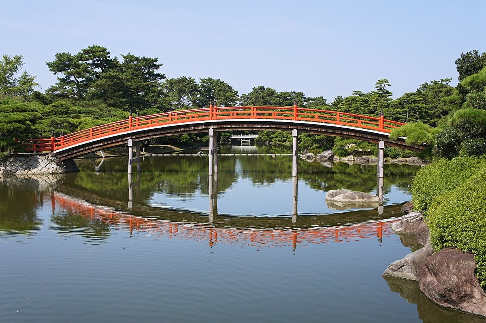
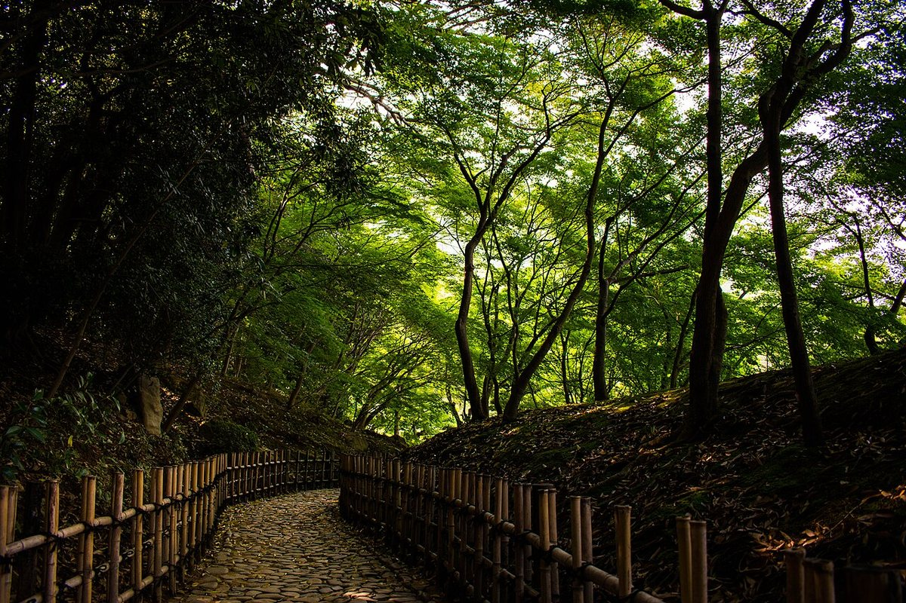
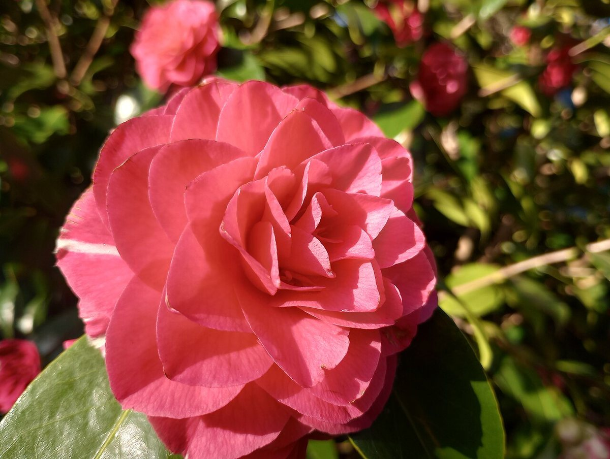
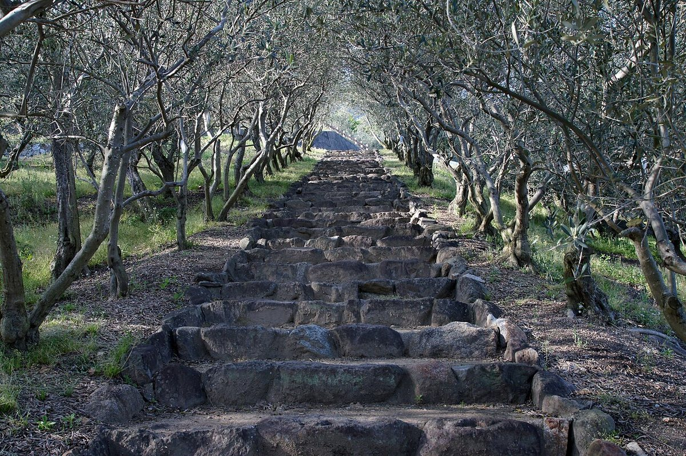

香川県坂出市
おうちごはん花紋
まるい模様をめぐるように、ゆっくりご案内します。
※デザインのモチーフとキャッチコピーは制作側の案です。店名の意味やお店の方針を示すものではありません。
01ご案内


お店の詳しい情報は準備中です。メニューや営業時間など、気になることはお気軽にお問い合わせください。

掲載写真はフリー素材のイメージで、店舗の実際の様子ではありません。香川県内で撮影された風景写真を中心に使用していますが、他地域で撮影された写真や撮影地が不明な写真が含まれる場合があります。お店や周辺の実際の様子を示すものではありません。